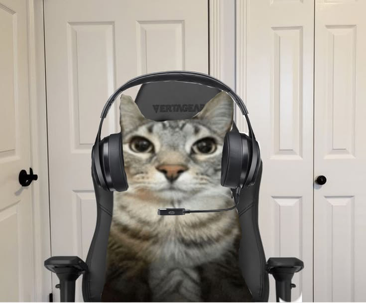

Tapia Ortiz Oscar Enrique
Actualmente soy un estudiante de: Ingeniería en Tecnologías de la Información.
Elegi la carrera por que me intereso el area de desarrollo de software y aprender nuevas tecnologías web,
que esta carrera una area muy amplia de conocimiento.
Gustos y Pasatiempos
- Gusto: Escuchar música mientras programo, los gatos y los videojuegos.
- Pasatiempo: Jugar videojuegos los fines de semana, leer manga en mis horas libres y pasar tiempo con mis gatos.
- Comida favorita: Tacos al pastor, pizza de pepperoni y lasaña.
- Lugar favorito: Shibuya y Aoshima (la isla de los gatos).
- Cosa que no me gusta: El desorden al trabajar, los lugares concurridos y el exceso de ruido.
- Comida que no me gusta: Hígado encebollado.
Haz clic en la imagen para regresar a la página principal:
